Seven Simultaneous Interpretation Applications: Test Report
Recording analysis: 2026-11-02—2026-11-04 · Release date: 2026-11-06 · Environment: Windows; supplementary Doubao recordings: Mac · Documentation updated: 2026-11-17
This report summarizes existing test videos and final evaluation records, covering Transync AI, Parley Voice, Palabra, Maestra Live, JotMe, Wordly, and iFLYTEK Simultaneous Interpretation. Currently, 47 scenes and 19 videos are used, including Parley Voice Qwen Live 2026-11-12 normal retest and 2026-11-11 impaired network supplementary recording. The original Doubao normal and impaired network videos V01 and V02 are used as historical records. The specific build version of the product has not been fully documented. The conclusion only applies to the settings and samples shown in the video and does not represent all current versions of the product.
All prose, data labels and text excerpts are presented in English. Excerpts from Chinese speech or interfaces are English glosses; the unchanged recordings and screenshots are the original evidence.
How to read
5/5The five key facts representing the fixed corpus are all confirmed and cannot be interpreted as an overall translation accuracy of 100%. Replays of the same manuscript are not independent corpus samples.- Subtitle onset counts only newly appearing English text in the current input. Both subtitle and translated-speech latency start at the source-speech onset. Neither measures sentence completion. The audio/video paths were not absolutely calibrated. No cross-product ranking, average or P95 is calculated.
- "100ms" and "10%" indicate the interface configuration, which is not equal to the actual service RTT or packet loss rate unless otherwise verified. DevTools page current limiting and two-way process damage cannot be directly equated.
- "Unconfirmed", "Not observed" and "Skip" should remain the original meaning; do not fill in zero points. Strict recovery time is not given when replays are mixed with old caches after recovery.
- Originals kept locally. Public pictures and videos are both occlusion copies, and screenshots are taken directly from video frames with the same occlusion rules. The video retains the timeline, and the tail segment is cropped and is also shown in the evidence list; the public copy cannot replace the original for frame-level measurements.
Standard test script and methods
S01: Please confirm the test results before ten o'clock next Tuesday morning. The upper limit of the budget is 30,000 yuan, not 130,000 yuan. It will be released only if the test passes; if problems are found, it will be postponed until Friday.
| fact | Check content |
|---|---|
| F1 | Confirm test results before 10 a.m. next Tuesday |
| F2 | Budget limit: CNY 30,000 |
| F3 | Not 130,000 yuan |
| F4 | Release only if the test passes |
| F5 | If a problem is discovered, it will be postponed until Friday. |
Use ffprobe to check stream information and display timestamp (PTS), ffmpeg decoding; OCR to assist in positioning subtitles, and then review adjacent frames; 10ms acoustic energy window to assist in positioning the original sound and translated speech. ASR is only for content support and does not use the automatic transcription results directly as product subtitles. When mixing and overlapping, homologous waveform cancellation is used as an auxiliary, and the cancellation sound is not used as the basis for the main sound quality or main voiceprint. The nominal audio track in the original is checked against the decoded hash based on the actual content, not just the audio track name.
Timbre comparison uses CAMPPlus 192 dimension, 16kHz mono, 80 dimension FBANK, dither=0, global mean removal and raw cosine. The original cosine is not a "sound restoration percentage", and the cross-language results of short fragments have obvious applicable boundaries. There are no MOS, naturalness, or prosody blind listening scores for this batch.
Key observations
| software | Five fact checks for normal scenarios | First appearance/first audible translated speech (seconds) | Main limitations |
|---|---|---|---|
| Transync AI | Final subtitles and corresponding translated speech 5/5 | 4.8 / 18.3 | Re-enter the first sound early; stability cannot be estimated with a small number of recordings |
| Parley Voice | Qwen Live latest version test, two rounds of subtitles and translated speech are 5/5 | 3.4 / 3.8 | 2026-11-12 Shanghai line; enter 4.5 / 5.0 seconds again; the build number is not on file |
| Palabra | Final subtitles 5/5; some translated speech currencies have not been confirmed | 14.3 / 14.8 | The new history block appears in its entirety; the clone switch is not shown in the video |
| Maestra Live | Final subtitles and corresponding independent translated speech 5/5 | 3.7 / 16.0 | The first presentation is often an unfinished intermediate draft |
| JotMe | Normal and 100ms registration 3/5, wrong amount | 3.9 / 5.1 | 10% alone records 5/5, which cannot be attributed to packet loss improvement. |
| Wordly | Baseline final subtitles 5/5, release object wording is ambiguous | 2.3 / Not confirmed | The first broadcast is turned off; later the broadcast recording is turned on and the first sound is 15.1 seconds |
| iFLYTEK simultaneous interpretation | Normal and sending end configuration recording subtitles/translated speech 5/5 | 3.0 / 9.6 | There are multiple windows on the listening side, and the translated speech of the second half is limited. |
The table is a summary of observations. Each row has different conditions, tracks, and sampling, and cannot be ranked as a same-condition speed ranking.
Transync AI
Translation fact coverage
Chinese → English, unified S01 two-sentence phrase material. Normal 3 strips, 100ms file 1 strips, uplink and downlink 10% probability packet loss configuration 1 strips, 5 strips of complete output of the final subtitles 5/5 are factually correct, and a total of 25/25 items are checked. The date and time, the budget limit of 30,000, not 130,000, the release will be released only after passing the test, and if there are problems, it will be postponed to Friday.
There are still mistranslations in the streaming subtitles: "Budget upper limit" was translated into budget up or down in about 22~23 seconds during cold start. It was corrected in about 24 seconds, and the final subtitles and broadcast were correct.
The new segment recovered from the 10 second interruption only has complete and correct items 2, partial items 1, and missing items 2: the release conditions and Friday extension are retained. Only the amount of 30,000 yuan is left, and the first sentence and "not 130,000" are missing.
5/5 only cover the facts of this corpus; 25 items come from the 5 output of the same corpus and cannot be used as the overall accuracy. Overlapping speech is verified using homologous offset to assist in translated speech, and 10% actual service packet loss has not been verified.
Sound Clone
3D-Speaker CAMPPlus voiceprint model (192 dimension), Chinese input and English translated speech of the same S01 semantic content are compared: input original sound → clone 0.6002, input original sound → default 0.0742, original cosine difference 0.5259. In addition, use independent clone reference audio, Reference→Clone 0.6817, Reference→Default 0.1571, and the ordering is consistent.
Main comparison sampling: input 13.48 seconds, clone 15.60 seconds, default 12.94 seconds; there is no overlap of Chinese source sounds in the two translated speechs, and no offset phonetics are used to calculate the main voiceprint.
Conclusion: The model characteristics of the cloned tone of this sample are obviously closer to the original sound. 0.6002 cannot be interpreted as 60.02% reduction rate; cross-language, short samples, no universal identity threshold and subjective blind listening, long-term stability cannot be inferred. 10% Although cloning is enabled for supplementary recording, the voices overlap and are not mixed into the main voiceprint for comparison.
Real-time performance
OBS video offline observation; the following are calculated from the earliest acoustic activity of S01, in order of "first subtitle of English subtitles/first sound of the same sentence translated speech", in seconds:
First startup·Clone: 4.81/18.25; New session in the same process·Clone: 4.91/6.94; Default tone: 5.67/16.10.
100ms for uplink and downlink: 6.09/7.89; 10% probability packet loss configuration for uplink and downlink: 5.98/8.10.
The first session takes about 0.83 seconds from the time it is accepted until it is clearly ready. This does not mean that it takes time to start the process, nor does it mean that the translated speech can be heard. It takes 13.44 seconds for subtitles to sound after cold start; it takes about 2.03 seconds for cloning in the same process, and about 2.12 seconds for 10% re-recording.
According to the first word of ASR "please", the cold start is 4.06/17.51 seconds, and the 10% supplementary recording is 5.25/7.37 seconds. The main aperture includes the leading low-energy sound segment; the video is 30fps, the OBS channel is not calibrated, and the overlapping first sound positioning is about ±0.1 seconds. Each condition only has 1 corresponding observations, and no stable mean or P95 is reported.
Translated speech quality
In normal complete translated speech without overlap, the span of the first and last utterances of the clone/default is 15.53/12.86 seconds, the peak amplitude is 0.381/0.275 (the full amplitude is 1), and the digital clipping ratio is 0.0%. Intersegment pause: The clone takes about 0.41~0.56 seconds, and the default is about 0.20~0.54 seconds. Independent English translated speechs recovered 5 facts, and no whole sentence content was repeated.
10% probability packet loss configuration supplementary recording: auxiliary transcription recovers the 5 fact, the utterance spans 13.27 seconds; the non-overlapping tail peak is 0.188, clipping 0.0%, and the two phrase pauses are about 0.53/0.96 seconds.
Conclusion: The evidence of comprehensibility in this sample is good, and there is no digital overload. Pauses cannot be directly judged as stuck, and complete transcription cannot rule out staccato, mechanical sounds or subtle distortions within words.
The three labeled tracks are actually the same mix, and the offset sound is only used as a content/time aid. Naturalness, rhythm, and subjective clarity are not scored by the human ear; there are no MOS, PESQ or STOI scores.
Impaired network performance
100ms file: 100ms is appended to each of the upper and lower lines, the first subtitle is 6.09 seconds, the first sound is 7.89 seconds, complete output, and the final subtitles are 5/5. The set value is not equal to the measured RTT.
10% probability packet loss file: 10% is configured for each uplink and downlink, cloning is enabled, 5.98 seconds for the first subtitle, 8.10 seconds for the first sound, 5 facts are retained for both subtitles and translated speech; the broadcast is completed in 29.654 seconds. Compared with the same-process clone scenario, the first subtitle takes 1.07 seconds longer and the first sound takes 1.16 seconds longer. The tool states that "the actual measured loss ratio has not been collected, and the business coverage needs to be verified", and it cannot claim to be stable and capable of withstanding real 10% packet loss.
10 seconds interrupt: Interface control status 54.800~65.033 seconds, about 10.23 seconds. It took about 13 seconds after the cancellation to see the new English amount, about 13.49 seconds to record the amount, and about 82 seconds to supplement the release conditions and Friday extension; the new subtitles have complete facts 2/5, the budget is only the amount, and the first sentence and negative information are missing.
Limitations: The same text is replayed in 68.524 seconds after cancellation, the session ends in about 84.13 seconds, and the supplementary translation attribution and subsequent broadcast are not fully observed. Only incomplete recovery within this observation will be judged, and permanent loss or strict timeout rate will not be judged. There are only 1 observations for each network condition, and a single difference cannot be attributed to network damage.
Test status and evidence gaps
Analysis of existing video footage completed.
Actual impaired network strength: The service packet loss rate has not been collected, the control coverage has not been verified, and 100ms/10% is only a configuration.
Time-consuming recovery after disconnection: After cancellation, the same manuscript is replayed and the session is subsequently ended. There is a lack of complete continuous records that can distinguish cached supplementary translations.
Stable latency/overall accuracy: the same short material, a small number of recordings, and the audio and video channels are not calibrated.
Naturalness/Rhythm: Missing human-blind hearing score.
Long-term stability of clones: only cross-language short samples, lack of multi-corpus and multiple comparisons.
Scenarios and evidence
| scene | Final subtitle facts for this round | Corresponding translated speech facts | Original video PTS | Review entry |
|---|---|---|---|---|
| N01 First boot·Clone enabled | correct / correct / correct / correct / correct | correct / correct / correct / correct / correct | transync-normal · 48.904s | screenshot · video |
| N02 New session and clone of same process started | correct / correct / correct / correct / correct | correct / correct / correct / correct / correct | transync-normal · 81.129s | screenshot · video |
| N03 New session in the same process·Default sound | correct / correct / correct / correct / correct | correct / correct / correct / correct / correct | transync-normal · 124.454s | screenshot · video |
| W01 uplink 100ms+downlink 100ms | correct / correct / correct / correct / correct | correct / correct / correct / correct / correct | transync-network · 39.194s | screenshot · video |
| W02 interrupts input during 10 seconds | Attribution is not unique, see explanation | Attribution is not unique, see explanation | transync-network · 64.000s | screenshot · video |
| W03 Replay the same text after canceling the interruption | Attribution is not unique, see explanation | Attribution is not unique, see explanation | transync-network · 82.800s | screenshot · video |
| W04 Upstream and downstream 10% probability of packet loss and cloning enabled | correct / correct / correct / correct / correct | Correct (offset assist) / Correct (offset assist) / Correct / Correct / Correct | transync-loss10 · 30.000s | screenshot · video |


The sequence of facts is F1—F5. Screenshots of the evidence are listed below; see detailed notes for each item and the status of the listening page.data/results.json。
N01 · First boot · Clone enabled · transync-normal / 48.904s
The first sound uses the passive tone overlap area; only 1 times start the sample for the first time.
N02 · New session in the same process · Clone enabled · transync-normal / 81.129s
The first sound overlaps with the Chinese source sound, and is offset by the same source waveform to assist in positioning. The error is about ±0.1 seconds.
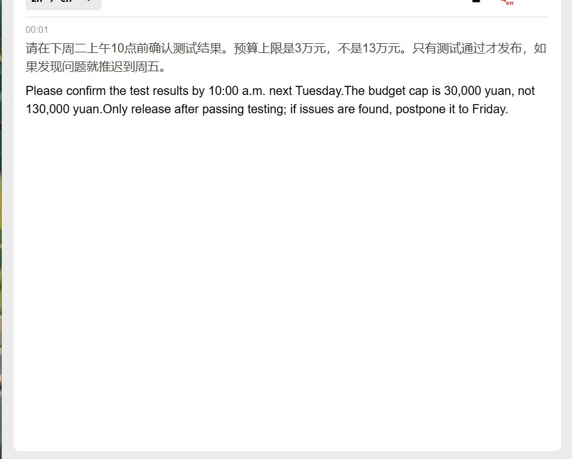
N03 · New session in the same process · Default tone · transync-normal / 124.454s
90～91 turn off the sound cloning in seconds and select deep male voice-A.
W01 · Uplink 100ms + Downlink 100ms · transync-network / 39.194s
The first sound overlaps, and the positioning is assisted by homologous cancellation; the network value is the tool setting.
W02 · Interrupt input during 10 seconds · transync-network / 64.000s
The old subtitles are retained; after restoration, the same text is replayed, and the fragments cannot be uniquely attributed to the original input.
W03 · Replay the same text after canceling the interruption · transync-network / 82.800s
A new subtitle 30,000 yuan appears near 78 seconds, and sounds near 78.526 seconds; it stops near 84.13 seconds, without waiting for the complete broadcast.
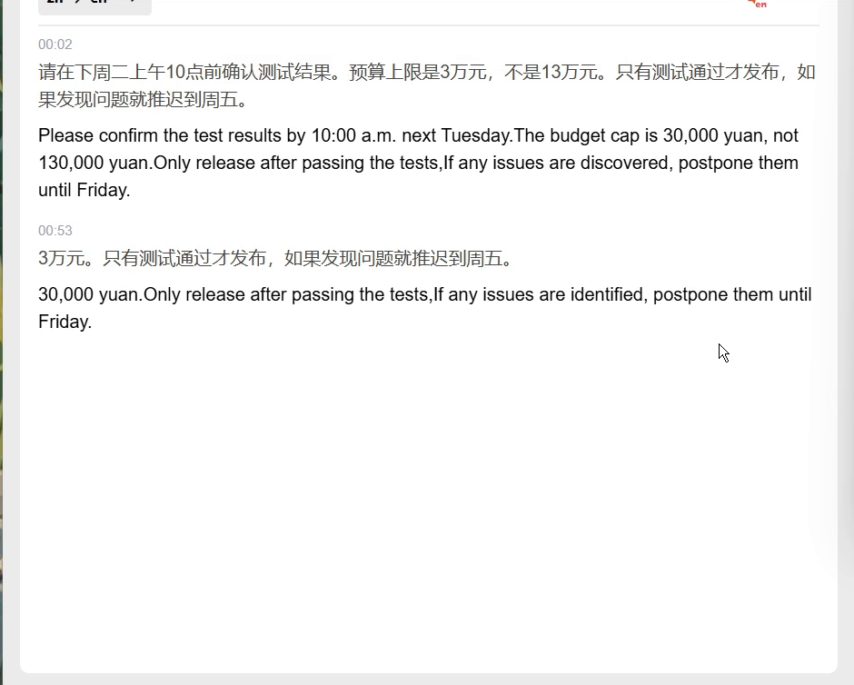
W04 · 10% probability of packet loss in uplink and downlink · Cloning enabled · transync-loss10 / 30.000s
The tool only displays the configured uplink/downlink 10%, the measured discard ratio is not collected, and the service coverage needs to be verified. ;1 sample, no statistical stability conclusion. The process has been opened when recording starts, and cold start is not included in this article. ; The three audio tracks are the same after decoding, the first sentence/budget overlaps with the source sound, and the same source is used to offset the auxiliary ASR; do not make a complete sound quality or new voiceprint comparison based on this. ; The tool display control object disappears near the end of the session, and the performance is restored after revocation without separate verification.
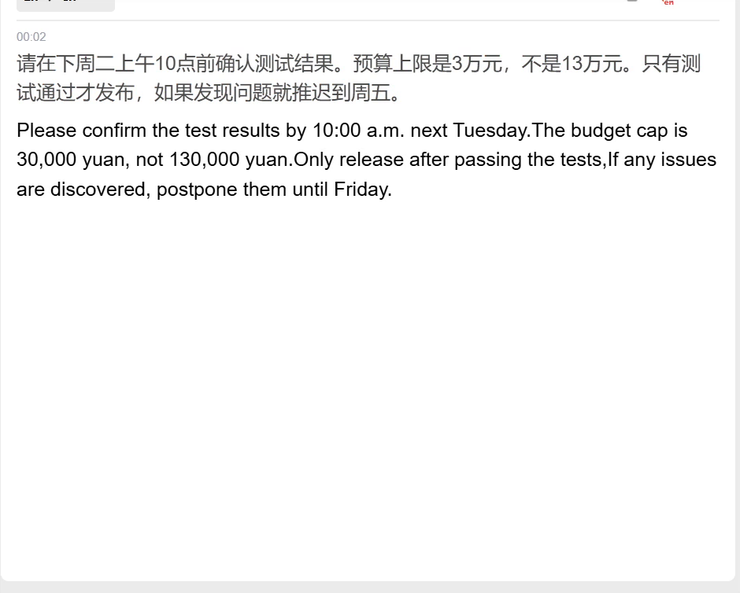
Parley Voice
Normal translation: latest adopted Qwen Live test
The main comparison uses the November 12, 2026 Qwen Live recording. First subtitle / first audible translated speech: 3.4 / 3.8 seconds on the first input and4.5 / 5.0 seconds on the repeated input in the same session. Both subtitle and independent English speech retain all five S01 facts. "Latest version test" means the latest recording adopted in this report; the exact build number was not fully archived.
Latest Qwen test video · Original timing record
Translation fact coverage
Qwen Live's normal two-round and 100 ms configuration, 10% packet loss configuration, three-round replay after the interruption is lifted, English subtitles and recorded voice translation are all 5/5. There is no new output before the interrupt round is replayed for about 10 seconds. Doubao historical clone C01 is still 3 complete, 1 partial, and 1 incorrect.
Sound Clone
Qwen Live enables real-time cloning for both rounds of supplementary recording, and there is no default tone comparison. This time, the real-time clone recording number C01 is retained. The non-overlapping F4–F5 English last sentence of this recording and the original CAMPPlus original cosine of the original reference is 0.5450, which only describes this short sample.
Real-time performance
The client window appears in about 5.63 seconds, the configuration page is displayed in 6.70 seconds, and the interval is about 1.1 seconds. Enter audio preparation in 7.67 seconds, enter monitoring in 8.97 seconds, and the interval is about 1.3 seconds.
Qwen Live 11 The first round of Shanghai line's first subtitle/first audible translated speech on month 12 takes about 3.4/3.8 seconds, and re-entering in the same session takes about 4.5/5.0 seconds. The Singapore line samples for 11 months and 11 days are 4.4/4.5 and 4.2/4.1 seconds respectively.
Qwen Live impaired network recording first subtitle/first response is about 100 ms configuration 5.0/5.2 seconds, 4.8/4.5 seconds after replay, 10% packet loss configuration 4.6/4.7 seconds. The replay difference is calculated from the starting point of the replay original sound.
The two rounds of data for the Singapore line on 11 and 11 can be viewed in the retest comparison.retest control
Doubao Mac short-utterance and pause examples (01, 02)
These two Mac recordings use different audio from the standard S01 cross-product test. They are supplementary evidence of low latency only, are excluded from the comparison table, and do not replace the latest adopted Qwen test. The lowest observed latency is approximately 1.7 seconds; this is not representative of long utterances or continuous speech.
Example 01: a short greeting. The Chinese greeting (English gloss: "Hello") is translated as "Hello". Subtitle latency is approximately 1.8 seconds and translated-speech onset latency approximately 1.7 seconds. The meaning is correct. Short utterances and suitable pauses may help the system segment and translate earlier. This sample cannot quantify a latency reduction caused by pausing; sentence length, speaking rhythm and recording conditions also matter.
Example 02: a greeting, a pause, then a meeting question. The speaker pauses approximately 0.5 seconds after the Chinese greeting, then asks in Chinese, "What time does this afternoon's meeting start?" The greeting subtitle appears after approximately 1.7 seconds. The question's subtitle latency is approximately 3.4 seconds and translated-speech onset latency approximately 3.37 seconds. The translation preserves the meaning. A pause may help earlier segmentation, but this sample cannot quantify the reduction caused by pausing or imply that the longer question also has a 1.7-second latency.
Each delay starts at the corresponding Chinese utterance onset. Subtitle sampling uncertainty is approximately 0.1 seconds. The greeting's translated speech in example 02 overlaps the following Chinese input, so its onset is unconfirmed. Mixed-audio waveforms and assisted transcription support the content checks. No human listening assessment was performed, and the audio/video paths were not calibrated. No matched-script with/without-pause trial was conducted, so no causal reduction or fixed latency is claimed.
Historical version and parameter supplement
11 month 11 first subtitle/first audible translated speech in the historical Qwen records are 4.4/4.5 seconds, 4.2/4.1 seconds, which are reserved for the old version description; the old and new lines and collection conditions are different, and the difference cannot be attributed entirely to version updates.
11 month 14 daily Doubao "version 2" historical parameters are only for record: first round first subtitle/first sound 5.14/5.57 seconds, second time 4.76/5.13 seconds; original sound to dubbing completion respectively 22.05/21.05 seconds. This listing is different from the content and settings of the Mac short sentence example above. It is not included in the comparison of competing products and no conclusion is made based on it.Historical parameters and redacted screenshots · Structured parameters
Translated speech quality
C01 clone recording has no overlapping F4–F5, the peak value of the last sentence is 0.908, the full digital clipping is 0%, and the inter-segment pause is about 0.16–0.65 seconds. The independent tail paragraph transcription retains the release conditions and Friday extension. Normal retests on 11 and 12 can use a separate English translation track to check two rounds of facts, and no subjective voice quality or voiceprint retests are performed.
Impaired network performance
The 100 ms configuration and the 10% packet loss configuration each observed complete subtitles and dubbing once. About 10 seconds interrupt is configured to display countdown in 40.13–50.27 seconds of recording; input starts from 37.17 seconds, and there is no new subtitles or translation before replaying the same script in 53.22 seconds. A complete set of output appears after replaying, and the time taken for automatic supplementary translation and strict recovery cannot be confirmed individually.
The impaired network workbench prompts that a possible local relay has been detected, and the service coverage needs to be verified. There is only one round of each condition, and the measured service delay and packet loss rate are not collected independently.
Test status and evidence gaps
Currently, November 12 Qwen Live normal two-wheel, November 11 Qwen Live impaired network four-wheel and Doubao clone C01. Old normal and impaired network videos are still available for comparison.
Scenarios and evidence
| scene | Final subtitle facts for this round | Corresponding translated speech facts | Original video PTS | Review entry |
|---|---|---|---|---|
| N05 Qwen Live · Shanghai line opens session for the first time | 5/5 | 5/5 | parley-qwen-normal-retest-20261112 · 26.000s | screenshot · video |
| N06 Qwen Live · Shanghai line re-enter in the same session | 5/5 | 5/5 | parley-qwen-normal-retest-20261112 · 50.000s | screenshot · video |
| C01 Doubao/real-time clone input sound | wrong / partial / correct / correct / correct | wrong / partial / correct / correct / correct | parley-v03 · 25.000s | screenshot · video |
| W05 Qwen Live · Uplink and downlink each 100 ms configuration | 5/5 | 5/5 | parley-qwen-network-20261111 · 29.000s | screenshot · video |
| R03 Qwen Live · About 10 seconds interrupted | not observed | not observed | parley-qwen-network-20261111 · 49.000s | screenshot · video |
| R04 Qwen Live · Replay of the same article after the interruption is lifted | 5/5 | 5/5 | parley-qwen-network-20261111 · 72.000s | screenshot · video |
| W06 Qwen Live · 10% probability packet loss configuration for both uplink and downlink | 5/5 | 5/5 | parley-qwen-network-20261111 · 97.000s | screenshot · video |


The sequence of facts is F1—F5. Screenshots of the evidence are listed below; see detailed notes for each item and the status of the listening page.data/results.json。
N05 · Qwen Live · Shanghai line opened session for the first time · 26.000s
Open the client from the desktop. Shanghai line, enable real-time cloning. In the first round, the action and objects of "confirm test results" are output in two sections, and the deadline and objects are retained together. Independent translated speech preserves five facts.
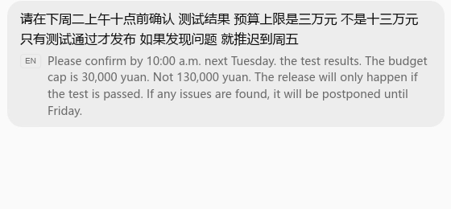
N06 · Qwen Live · Shanghai line re-enter in the same session · 50.000s
Only check newly added English words in the same bubble. Independent translated speech preserves five facts.
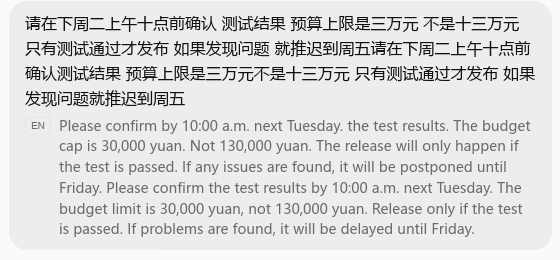
C01 · Doubao/real-time clone input sound · parley-v03 / 25.000s
The screen clearly shows that the input sound is cloned in real time; F1 is still wrong, F2 only retains the amount but not the budget upper limit, record the part.
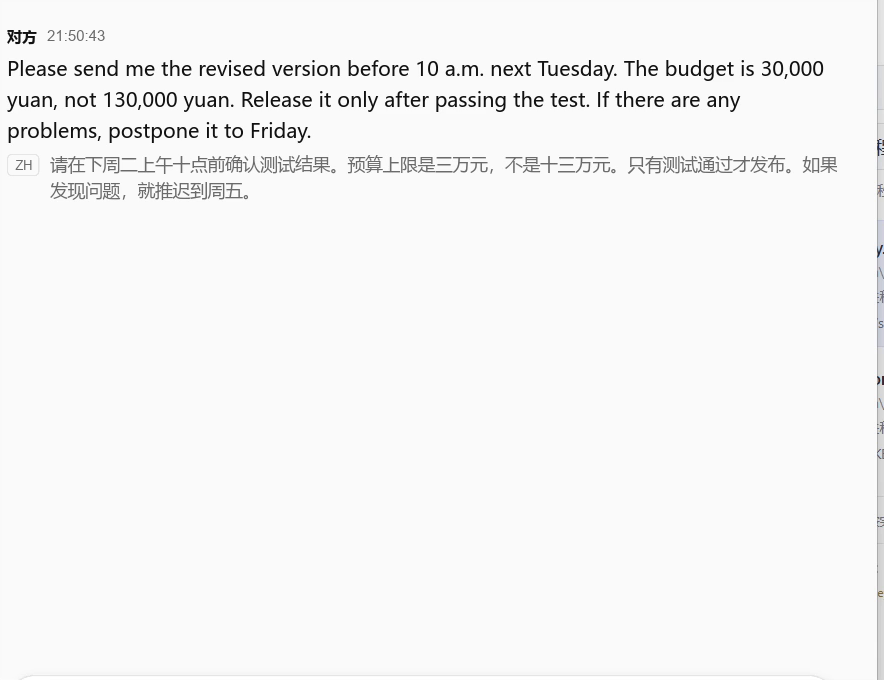
W05 · Qwen Live · Uplink and downlink each 100 ms configuration · 29.000s
The impaired network workbench displays parley.exe for about 5.27 seconds for upstream and downstream operations for 100 ms each, and 31.80 seconds displays that the control object is none. The complete output of this round ends during the configuration display.
R03 · Qwen Live · About 10 seconds of interruption · 49.000s
The original sound of this round starts from 37.17 seconds, the tool shows that the connection is interrupted at about 40 seconds, and the control object shows that there is no control object at 50.27 seconds. There will be no new subtitles or translations for this round before the 53.22 second replay. The subtitles in the screenshot are from a previous round.
R04 · Qwen Live · Replay of the same article after the interruption is lifted · 72.000s
The same script was replayed approximately 3.0 seconds after the deconfiguration, and a complete new set of output was observed. The difference is calculated from the starting point of the original sound replay, and the video cannot uniquely exclude front wheel residue or determine the time taken for automatic recovery.
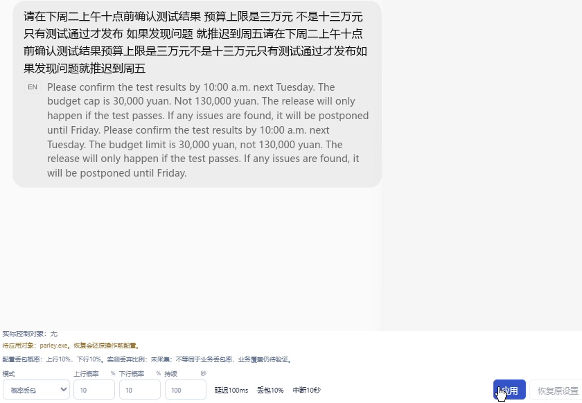
W06 · Qwen Live · Upstream and downstream 10% probability packet loss configuration · 97.000s
It takes about 75.80 seconds to display the 10% probability of packet loss for the upstream and downstream configurations of parley.exe. F1 is appended to the end of the previous bubble, and F2–F5 appears in the next bubble. The tool indicates that the actual discard ratio has not been collected.
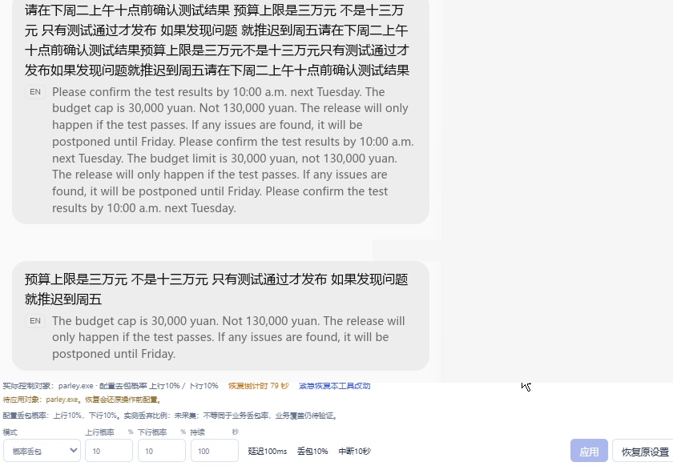
Palabra
Translation fact coverage
Normal 2 strips, nominal clones, 100ms configuration and replay after recovery: the final new subtitles are all 5/5 facts. The first time, nominal clone, 100ms and replay translated speech were checked to the 5 item; the translated speech of normal recording and 10% configuration showed yen/yuan ambiguity, two items of each currency were not confirmed, and the other 3 items were retained.
After interrupting the input, the new paragraph is only "Please postpone it from next Tuesday to Friday.": complete facts 0/5, partial 1 items, and other errors or omissions; the old complete block is not counted. Complete new output will be seen after 71.8 seconds of clear replay.
Sound Clone
CAMPPlus 192 dimensional voiceprint; comparison of the same original reference and non-overlapping English fragments F2~F5: nominal clone 0.5822, normal recording 0.1979, original cosine difference 0.3844.
This sample claims that the cloned clip is closer to the original sound; the normal and clone switches are not shown in the video, so it cannot be strictly proven that "turning on cloning" makes a difference. Cross-language short samples, no subjective blind listening; similarity is not a restored percentage.
Real-time performance
First display/first sound, in seconds; both are measured from the original acoustic starting point of the current round.
First time 14.3/14.8; normal 14.4/14.9; nominal clone 14.7/15.4; 100ms14.5/15.1; 10%16.4/15.9.
The subtitles appear in the entire paragraph in the new historical block and cannot be counted as having the old block earlier. Single video observation; the audio and video channels are not calibrated, and there is no stable mean or P95.
Startup in stages: the main interface appears in 12~15 seconds; the session is ready in 30~31 seconds and starts after inputting 32.0 seconds.
For the first time, the entire last sentence is displayed in 14.3 seconds; the final translated speech span is 26.3 seconds. Just because the last sentence is complete for the first time does not mean that it will not be revised or repeated later.
Translated speech quality
Non-overlapping F2~F5 fragment peaks: normal 0.049, nominal clone 0.387; 100ms complete translated speech 0.273, 10% complete translated speech 0.285, full clipping is 0%.
The volume difference between normal and nominal clone recordings is obvious, and the loudness has not been calibrated; the intermittent interval caused by the energy threshold at low volume does not directly indicate freezing. Subtitles and independent transcription support intelligibility; normal and 10% recorded translated speech currencies are subject to human listening. Naturalness and rhythm were not scored by blind listening.
Impaired network performance
Complete new subtitles appear under the 100ms and 10% configurations; the local tool controls Palabra.ai.exe and configures the upper and lower lines to 100ms or 10% respectively. The actual business packet loss ratio has not been verified.
It was interrupted for about 54 ~ 64 seconds, and the input 51.2 seconds started; after the cancellation, only the short period of Tuesday with errors appearing was postponed to Friday. The complete output will be output after 71.8 seconds of replay, and the replay result cannot be automatically filled in as the previous cache.
Test status and evidence gaps
Analysis of existing video footage completed.
Clone effect attribution: The default/clone switch is not displayed, and there is a lack of same-condition comparison to verify the settings.
Translated speech currency: Normal and 10% recordings have yen (Japanese yen)/yuan (yuan) translated speech ambiguity and lack of manual listening confirmation.
Time-consuming recovery after network disconnection: The complete output appears after replay, and there is a lack of continuous recovery records without replay.
Actual impaired network strength: The service packet loss rate and control coverage have not been verified.
Stable latency/overall accuracy: short material, few recordings, uncalibrated pathways; naturalness/rhythm not scored by blind listening.
Scenarios and evidence
| scene | Final subtitle facts for this round | Corresponding translated speech facts | Original video PTS | Review entry |
|---|---|---|---|---|
| N01 first registration | correct / correct / correct / correct / correct | correct / correct / correct / correct / correct | palabra-v01 · 59.000s | screenshot · video |
| N02 normal recording | correct / correct / correct / correct / correct | Correct / Not confirmed / Not confirmed / Correct / Correct | palabra-v03 · 40.000s | screenshot · video |
| C01 file nominal tone clone | correct / correct / correct / correct / correct | correct / correct / correct / correct / correct | palabra-v04 · 43.000s | screenshot · video |
| W01 Uplink and downlink configuration of each 100ms | correct / correct / correct / correct / correct | correct / correct / correct / correct / correct | palabra-v02 · 46.000s | screenshot · video |
| W02 Short stub after interruption | error / omission / omission / omission / part | error / omission / omission / omission / part | palabra-v02 · 70.000s | screenshot · video |
| W03 Replay after recovery | correct / correct / correct / correct / correct | correct / correct / correct / correct / correct | palabra-v02 · 100.000s | screenshot · video |
| W04 10% probability packet loss configuration for uplink and downlink | correct / correct / correct / correct / correct | Correct / Not confirmed / Not confirmed / Correct / Correct | palabra-v02 · 132.000s | screenshot · video |


The sequence of facts is F1—F5. Screenshots of the evidence are listed below; see detailed notes for each item and the status of the listening page.data/results.json。
N01 · First entry · palabra-v01 / 59.000s
Check new blocks in the history panel after they appear, excluding old blocks above. The English translated speech can be independently checked after the source sound is finished.
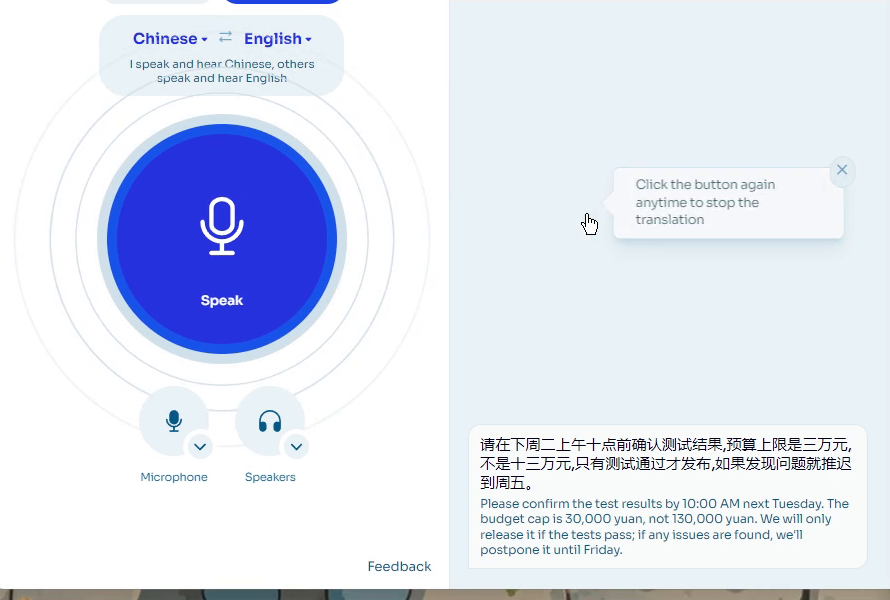
N02 · Normal recording · palabra-v03 / 40.000s
The new output is the second historical block; the original non-overlapping full-segment independent transcription and the auxiliary transcription give different results in yen/yuan for the currency. The translated speech of F2/F3 is not confirmed, and the product is not judged to be mistranslated. The original automatic timestamp of the first few words in the translated speech was too early, and the final first sound was determined by the original sound waveform.
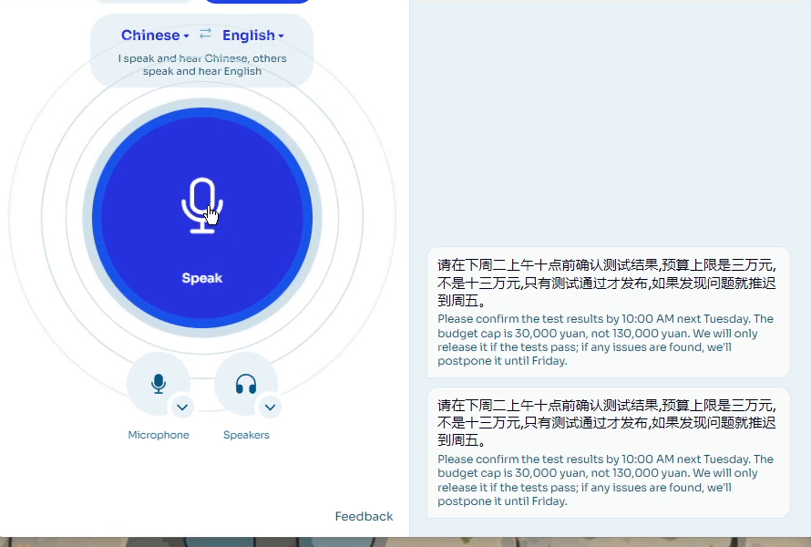
C01 · File nominal tone clone · palabra-v04 / 43.000s
The file name is cloned; the video does not show the sound cloning switch, and the name is not regarded as the switch status has been verified.
W01 · Upstream and downstream 100ms configuration · palabra-v02 / 46.000s
Both the new history block and the complete translated speech retain the 5 facts.
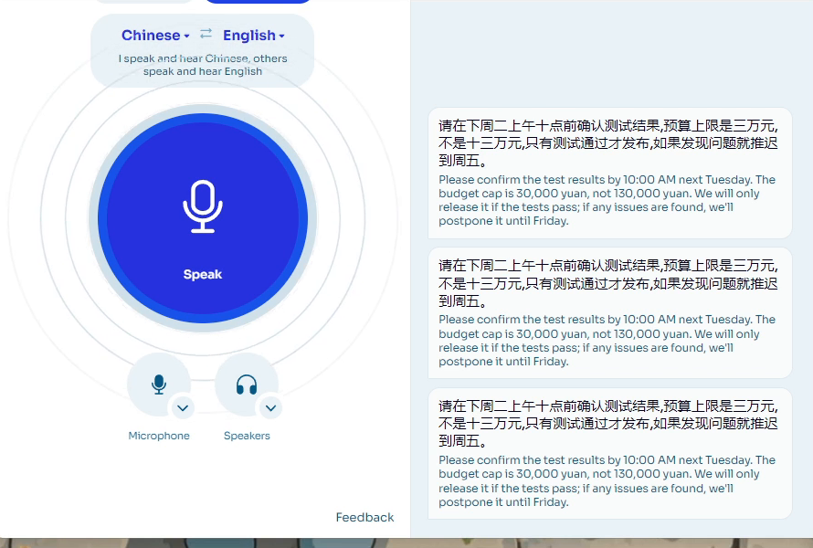
W02 · Short stub after interruption · palabra-v02 / 70.000s
The interrupt configuration is about 54~64 seconds, and 51.2 seconds have been input. Only one sentence in the new paragraph is wrongly rewritten; F5 lacks the conditions to find the problem, so only part of it is recorded. Complete old blocks above are not counted.
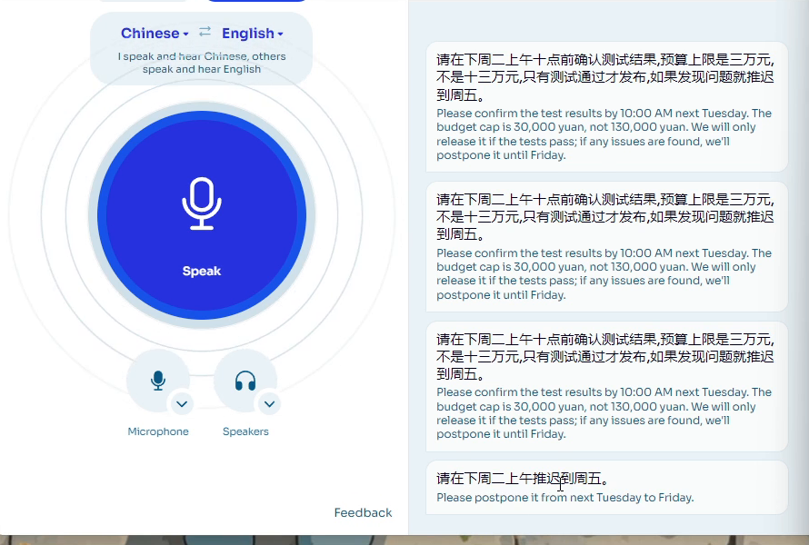
W03 · Replay after recovery · palabra-v02 / 100.000s
71.8 seconds clear replay; complete output cannot retroactively fill in previously interrupted input.
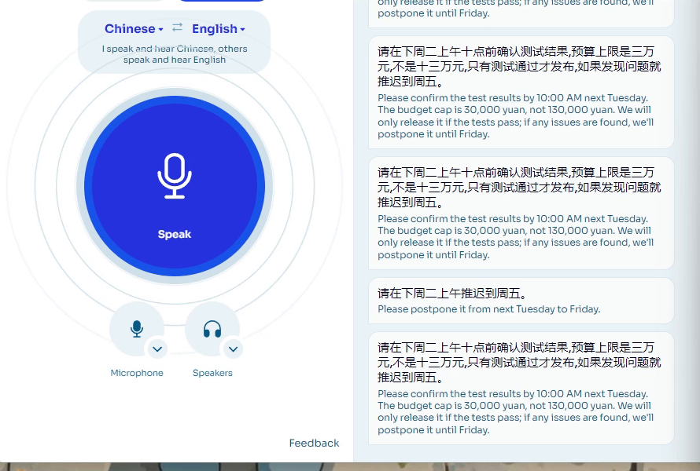
W04 · 10% probability packet loss configuration for uplink and downlink · palabra-v02 / 132.000s
The currency of the subtitles is yuan; the automatic translated speech of the translated speech appears as yen, the currency has not been confirmed by human ears, and the translated speech of F2/F3 has not been confirmed, so it is not directly judged that the product is mistranslated.
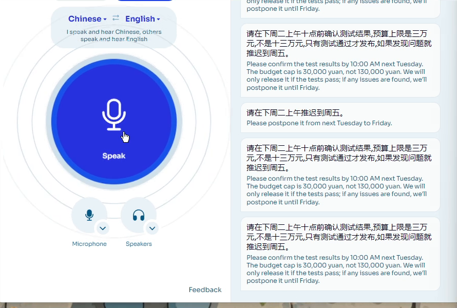
Maestra Live
Translation fact coverage
For the first time, there are normal recording times, 100ms configuration, offline recovery section and 10% configuration section, and the final new subtitles are 5/5 key facts; the corresponding independent transcription of the complete translated speech without overlap also retains the 5 item.
The first subtitle is often an incomplete intermediate draft such as Please next Tuesday / Please by next Tuesday; restore the first draft Please go and later amend it. 5/5 is the factual coverage of this corpus and does not represent the overall accuracy. The existing normal video originals have been verified to be consistent and have been reviewed and reused.
Sound Clone
This time, we skipped the original evaluation scope and did not carry out sound cloning acceptance; we do not judge whether the product supports this function based on this.
Real-time performance
First display/first sound, in seconds; both are measured from the original acoustic starting point of the current round.
First time 3.7/16.0; existing normal 3.0/17.2; 100ms configure 3.7/15.7; 10% configure 6.3/17.6.
Subtitles appear earlier, and the translated speech is mostly broadcast after the original sound has finished. The input waveforms of the existing normal recordings are different and measured according to the original sound. Single video observation; the audio and video channels are not calibrated, and there is no stable mean or P95.
Startup in stages: The browser opens in 1~2 seconds; the product homepage is visible in 5~6 seconds; the session is ready in 10~10.5 seconds and starts in 11.0 seconds.
For the first time, the entire last sentence is displayed in 14.2 seconds; the final translated speech span is 27.7 seconds. Just because the last sentence is complete for the first time does not mean that it will not be revised or repeated later.
Translated speech quality
The peak value of the complete English translated speech of the 5 segment without overlap is about 0.577~0.584, and the full digital clipping is 0% on average; the phrase pause under the energy threshold is about 0.23~0.75 seconds.
Each of the independent transcriptions retains 5 facts, and there is no repetition of the entire sentence in this batch of complete translated speechs. It can support the intelligibility of this sample and there is no full-frame overload, and it cannot prove that there is no subtle staccato or mechanical feeling; the naturalness and rhythm are not scored by blind listening.
Impaired network performance
DevTools page configuration: 100ms, about 37~47 seconds Offline, and then 10% Packet Loss; it cannot be the same as the local tool "100ms/10% for upstream and downstream".
Both 100ms and 10% configuration segments have complete new subtitles/translated speechs. During the offline period, there was a WebSocket/GET disconnection error; after the cancellation, the new subtitles were gradually revised, the complete translated speech ended before the next 71.8 second replay, and the 5 facts were retained.
Only the visible page status is verified, and the actual packet loss and scope of the entire translation link are not independently confirmed.
Test status and evidence gaps
Analysis of existing video footage completed.
The scope of the impaired network: only the browser development tool page configuration and error reporting are visible, and there is a lack of verification of the control of the entire real-time translation link and the actual packet loss rate.
Stable recovery capability: Complete translated speech has been seen after this revocation, but repeated interruption samples and link coverage verification are missing.
Stable latency/overall accuracy: the same short material, a small number of recordings, and the audio and video channels are not calibrated.
Naturalness/Subtle Distortion: Missing artificial blind listening score; full transcription and no digital clipping do not demonstrate naturalness or absence of subtle staccato.
Scenarios and evidence
| scene | Final subtitle facts for this round | Corresponding translated speech facts | Original video PTS | Review entry |
|---|---|---|---|---|
| N01 First recording/Puck | correct / correct / correct / correct / correct | correct / correct / correct / correct / correct | maestra-v01 · 38.000s | screenshot · video |
| N02 has normal recording times/Puck | correct / correct / correct / correct / correct | correct / correct / correct / correct / correct | maestra-v03 · 30.000s | screenshot · video |
| W01 DevTools delay 100ms configuration | correct / correct / correct / correct / correct | correct / correct / correct / correct / correct | maestra-v02 · 33.000s | screenshot · video |
| New paragraph after W02 Offline cancellation | correct / correct / correct / correct / correct | correct / correct / correct / correct / correct | maestra-v02 · 68.500s | screenshot · video |
| W04 DevTools 10% packet loss configuration | correct / correct / correct / correct / correct | correct / correct / correct / correct / correct | maestra-v02 · 100.000s | screenshot · video |


The sequence of facts is F1—F5. Screenshots of the evidence are listed below; see detailed notes for each item and the status of the listening page.data/results.json。
N01 · First recording/Puck · maestra-v01 / 38.000s
Automatic sound cloning is turned off. The first streaming show is Please next Tuesday, and 5 facts are finally completed.
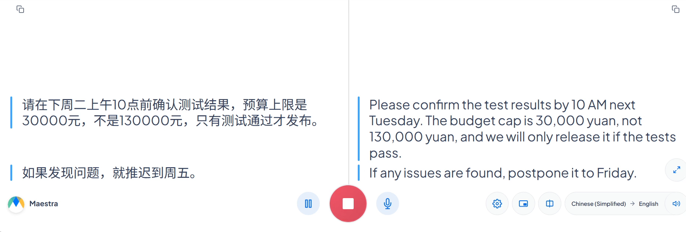
N02 · Existing normal recording/Puck · maestra-v03 / 30.000s
The original SHA256 is consistent with the old analysis of 2026-11-02; the input waveform of this recording is different from other recordings in this round, and its own original sound positioning is used alone.
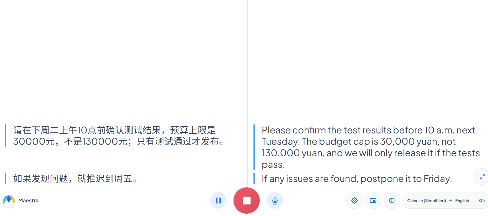
W01 · DevTools delay 100ms configuration · maestra-v02/33.000s
The first subtitle is just Please by next Tuesday, and the final subtitles and independent translated speech both retain the 5 item.
W02 · New segment after Offline cancellation · maestra-v02 / 68.500s
The 35.9 seconds input spans approximately 37 ~ 47 seconds Offline; after canceling, Please go appears first and then the correction is completed. The complete translated speech ends before the next replay in 71.8 seconds and can be attributed to this paragraph.
W04 · DevTools 10% packet loss configuration · maestra-v02 / 100.000s
The screen shows 10% Packet Loss configuration; WebRTC or actual business packet coverage has not been independently verified.
JotMe
Translation fact coverage
Unify S01 Chinese → English. For the first time, the replay in the same process and the recording of 100ms configuration, the final subtitles and auxiliary translated speech are all 3/5. Complete facts: deadline, release conditions and Friday extension are reserved; 30,000 yuan was changed to 130,000 yuan or 300,000 yuan, and "not 130,000 yuan" was changed to "not 1,300,000 yuan".
A separate 10% packet loss configuration records the final subtitles and auxiliary translated speech 5/5; it cannot be inferred that packet loss improves the accuracy. There is still an amount error in the recovery and replay merge segment, and the attribution is restricted.
Sound Clone
This time, we skipped the original evaluation scope and did not carry out sound cloning acceptance; we do not judge whether the product supports this function based on this.
Real-time performance
First display/first sound, in seconds; both are measured from the original acoustic starting point of the current round.
3.9/5.1 for the first time; 5.6/6.9 again; 100ms configures 5.5/6.6; 10% configures 5.1/6.5.
Single video observation; the audio and video channels are not calibrated, and there is no stable mean or P95. The source sound and the translated speech overlap, and the first sound is offset by the same origin to assist in positioning; the first sound is only the first English fragment, not a complete sentence.
Startup in stages: The program is loaded in the interval of about 2~8 seconds; the session is ready in the interval of 14~15 seconds for recording, and it starts after inputting 17.5 seconds.
For the first time, the entire last sentence is displayed in 18.3 seconds; the final translated speech span is 19.7 seconds. Just because the last sentence is complete for the first time does not mean that it will not be revised or repeated later.
Translated speech quality
Clean end peak: 0.159 for the first time, 0.174 again, 10% configuration 0.257; full-scale digital clipping is 0%.
After re-entering, the release conditions and Friday postponement are broadcast again; subtitles and independent tail segment transcription evidence are retained. 10% of recordings have pauses exceeding 2 seconds, but network lag cannot be determined based on pauses alone.
The sound quality cannot be fully evaluated in the mixing overlap area; no naturalness, rhythm or MOS blind listening scores were made.
Impaired network performance
100ms: The screen shows that 100ms is appended to the upstream and downstream lines of JotMe.exe; the output is complete but the amount is mistranslated.
10%: Individual recording shows probability packet loss configuration, 10% for uplink and downlink respectively; the final subtitle/auxiliary translated speech 5 fact is retained, and the real service packet loss rate is not collected.
Interruption: display control for about 31~41 seconds; input has started for 24.5 seconds, input again for 38.8 seconds, and then new segments and additional broadcasts are interleaved. It can only describe this new output, and cannot give strict recovery time or cached supplementary translation attribution.
Test status and evidence gaps
Analysis of existing video footage completed.
Actual impaired network strength: only 100ms/10% configuration records, lacking actual service packet loss rate and control coverage verification.
Time-consuming recovery after network disconnection: input spans interruptions and replays of the same manuscript, and there is a lack of continuous records that can distinguish cached supplementary translations from new input.
Complete translated speech quality: the original sound and the translated speech overlap, and the entire paragraph is missing independent translated speech; naturalness/rhythm were not scored by blind listening.
Stable latency/overall accuracy: the same short material, a small number of recordings, and the audio and video channels are not calibrated.
Scenarios and evidence
| scene | Final subtitle facts for this round | Corresponding translated speech facts | Original video PTS | Review entry |
|---|---|---|---|---|
| N01 first registration | correct/wrong/wrong/correct/correct | correct/wrong/wrong/correct/correct | jotme-v03 · 39.000s | screenshot · video |
| N02 Same process replay | correct/wrong/wrong/correct/correct | correct/wrong/wrong/correct/correct | jotme-v03 · 70.000s | screenshot · video |
| W01 Uplink and downlink configuration of each 100ms | correct/wrong/wrong/correct/correct | correct/wrong/wrong/correct/correct | jotme-v02 · 23.000s | screenshot · video |
| R01 interrupt and replay merge new segments | correct/wrong/wrong/correct/correct | correct/wrong/wrong/correct/correct | jotme-v02 · 52.000s | screenshot · video |
| W04 10% probability packet loss configuration for uplink and downlink | correct / correct / correct / correct / correct | correct / correct / correct / correct / correct | jotme-v01 · 37.000s | screenshot · video |


The sequence of facts is F1—F5. Screenshots of the evidence are listed below; see detailed notes for each item and the status of the listening page.data/results.json。
N01 · First time recording · jotme-v03 / 39.000s
Both subtitles and offset-assisted translated speech change 30,000 to 130,000, and 130,000 to 1,300,000. Final results are unrevised.
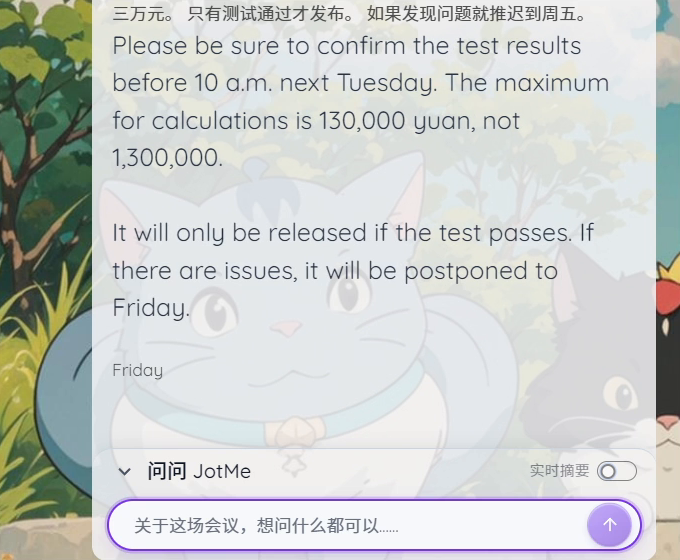
N02 · Same process replay · jotme-v03 / 70.000s
The release condition and Friday postponement appear again in the last sentence; only one S01 input is repeated and broadcast, and the repetition is not regarded as an independent sample.
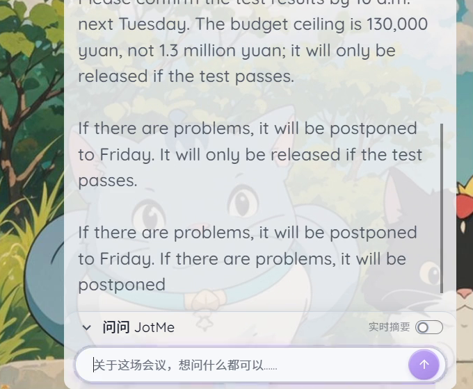
W01 · Upstream and downstream 100ms configuration · jotme-v02 / 23.000s
Check with the applied status of the tool; the amounts are all one order of magnitude higher.
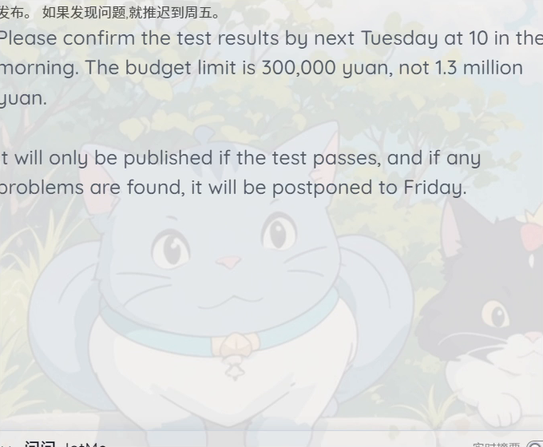
R01 · Interrupt and replay merge new segments · jotme-v02 / 52.000s
24.5 seconds input precedes the real application of the interrupt, and 38.8 seconds input again; 40 ~ 52 seconds new output cannot be strictly attributed to a certain round, and the time taken for complete recovery of a single round cannot be calculated.
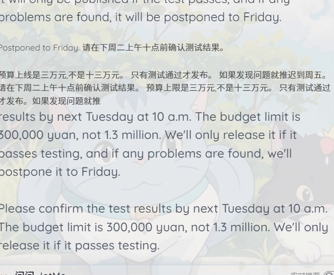
W04 · 10% probability packet loss configuration for uplink and downlink · jotme-v01 / 37.000s
The subtitles read thirty thousand and one hundred thirty thousand; the auxiliary translated speech also restored the item 5. Only this configuration is recorded, and the actual service packet loss rate has not been verified.
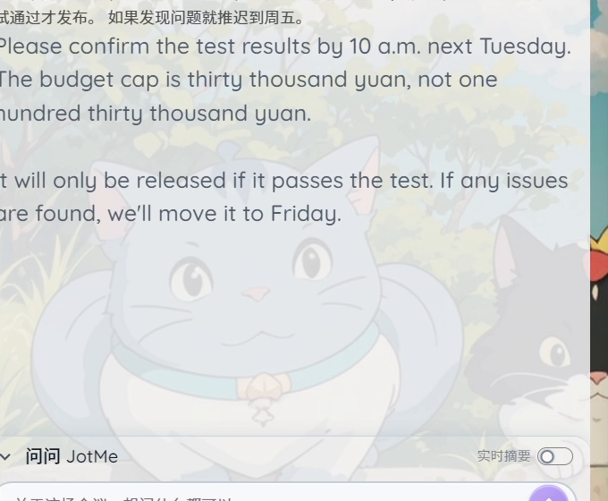
Wordly
Translation fact coverage
The first two no throttling baselines for the first subtitles and the impaired network recording, the final new subtitles retain the key facts 5; the independent translated speech after the broadcast is turned on also restores the 5 items. In English, the release/delay object is written as test, and the expression is ambiguous. 5/5 cannot be understood as the entire paragraph is worded correctly.
100ms has new subtitles entered twice, and the key facts are retained; the corresponding new translated speech has not been confirmed. The new subtitles configured for packet loss at the end of normal recording are missing next Tuesday, complete facts 4/5, and some 1 items. The new output of the last 10% input is not confirmed.
Sound Clone
This time, we skipped the original evaluation scope and did not carry out sound cloning acceptance; we do not judge whether the product supports this function based on this.
Real-time performance
First display/first sound, in seconds; both are measured from the original acoustic starting point of the current round.
The first subtitles were recorded for 2.3 seconds, and the first sound was not measured during initial muting; after the broadcast was turned on, the first sound was recorded for 15.1 seconds. No throttling baselines are 2.2/16.0, 2.4/15.1.
100ms new subtitles twice about 2.3 and 15.5 seconds, the new translated speech was not confirmed; the second time there was replay/queue interference. Single video observation; the audio and video channels are not calibrated, and there is no stable mean or P95.
Startup phase: The browser opening time is missing; the speaking end is 2~4 seconds, the listener end is 4~6 seconds to join, the routing configuration is completed in 8~10 seconds; the initial broadcast is closed.
For the first time, the full range input of the last sentence is 14.0 seconds; the input of the final range of the translated speech is not confirmed. Just because the last sentence is complete for the first time does not mean that it will not be revised or repeated later.
Translated speech quality
After the broadcast is turned on, the complete translated speech peak is 0.659; the other two segments are no throttling baseline 0.658/0.653, the full-scale digital clipping is 0%, and the phrase pauses for about 0.17~0.75 seconds. Independent transcription can recover the 5 facts, but test is ambiguous as a release/delay object.
New translated speechs that are not recorded in early silent and impaired network segments cannot be scored, and it cannot be used to conclude that the product does not support voice. No blind listening scores were made for naturalness and rhythm.
Impaired network performance
"Impaired network" recording 0 ~ 76 seconds is still No throttling, 11.6/45.2 second input is only the baseline. About 77 seconds later, the audience page selects 100ms. The subtitles have been updated, and the unrecorded can be attributed to the new English broadcast; the speaking end is another browser page, and the scope of effect has not been verified.
About 131 seconds, the 10% configuration is selected and then input again. The new output is not confirmed before the recording ends in 149.6 seconds, and the old subtitles are not counted as successful. The packet loss configuration was also selected in the later part of normal recording, and the new subtitles were missing on Tuesday.
No evidence was found that Offline was applied continuously for about 10 seconds, and no conclusion can be made about interruption recovery.
Test status and evidence gaps
Analysis of existing video footage completed.
10 second network disconnection recovery: No record of continuous offline application for about 10 seconds was found, and there is a lack of qualified interruption, cancellation and recovery processes.
Impaired network new translated speech/new output: 100ms did not record a confirmable new translated speech; 10%’s last input did not confirm the new output before the end of the recording, lacking independent recording and follow-up observation.
Scope of impaired network: only listener page configuration, lack of speaking end/real-time connection control and actual packet loss rate verification.
Stable latency/overall accuracy: short material, few recordings, uncalibrated pathways.
Naturalness/Rhythm: Missing human blind listening scores.
Scenarios and evidence
| scene | Final subtitle facts for this round | Corresponding translated speech facts | Original video PTS | Review entry |
|---|---|---|---|---|
| N01 first subtitle recording | correct / correct / correct / correct / correct | Not confirmed / Not confirmed / Not confirmed / Not confirmed / Not confirmed | wordly-v01 · 28.000s | screenshot · video |
| N03 starts recording after broadcasting | Not confirmed / Not confirmed / Not confirmed / Not confirmed / Not confirmed | correct / correct / correct / correct / correct | wordly-v01 · 82.800s | screenshot · video |
| N04 Normal recording rear section 10% configuration | part / correct / correct / correct / correct | Not confirmed / Not confirmed / Not confirmed / Not confirmed / Not confirmed | wordly-v01 · 100.000s | screenshot · video |
| B01 Impaired network recording/No throttling baseline 1 | correct / correct / correct / correct / correct | correct / correct / correct / correct / correct | wordly-v02 · 27.000s | screenshot · video |
| B02 Impaired network recording/No throttling baseline 2 | correct / correct / correct / correct / correct | correct / correct / correct / correct / correct | wordly-v02 · 61.000s | screenshot · video |
| W01a DevTools 100ms/first entry | correct / correct / correct / correct / correct | Not confirmed / Not confirmed / Not confirmed / Not confirmed / Not confirmed | wordly-v02 · 96.000s | screenshot · video |
| W01b DevTools 100ms/Continue replay | correct / correct / correct / correct / correct | Not confirmed / Not confirmed / Not confirmed / Not confirmed / Not confirmed | wordly-v02 · 118.000s | screenshot · video |
| W04 DevTools 10%/last input | Not confirmed / Not confirmed / Not confirmed / Not confirmed / Not confirmed | Not confirmed / Not confirmed / Not confirmed / Not confirmed / Not confirmed | wordly-v02 · 149.000s | screenshot · video |


The sequence of facts is F1—F5. Screenshots of the evidence are listed below; see detailed notes for each item and the status of the listening page.data/results.json。
N01 · First subtitle recording · wordly-v01 / 28.000s
The listener side was muted early and this round of English broadcast was not recorded. F4/F5 writes the release and extension objects as test, which causes ambiguity in expression; key conditions and dates are retained.
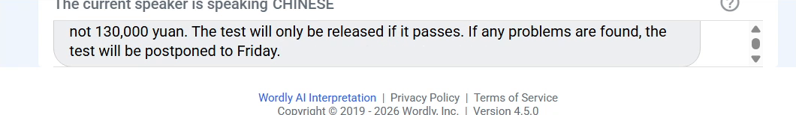
N03 · Start recording after broadcast · wordly-v01 / 82.800s
Enter 52.8 seconds, and the original sounds 67.9 ~ 82.7 seconds are complete and independent English translated speechs; after about 76 seconds, the packet loss setting is switched, and the end of the broadcast is changed across settings, not counting the entire segment of strictly pure normal network. The corpus is repeated and the old subtitles of the picture are retained. The new subtitles of this round cannot be scored independently.
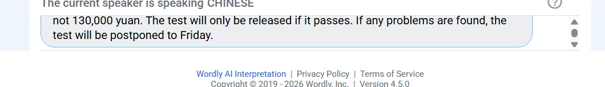
N04 · Normal recording post-section 10% configuration · wordly-v01 / 100.000s
The later section of this file switches the WebRTC packet loss configuration. It can be seen that the new segment does not retain next Tuesday; it is not included in the normal baseline, and no new translated speech can be confirmed.
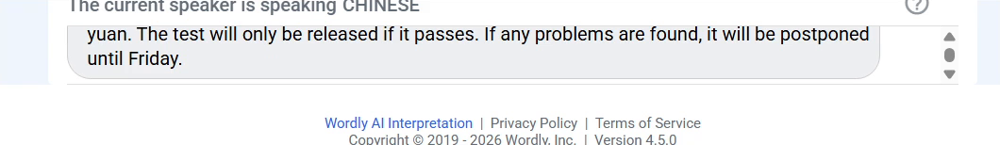
B01 · Impaired network recording/No throttling baseline 1 · wordly-v02 / 27.000s
At this time, No throttling is clearly displayed and is not regarded as 100ms or interrupt result. Independent English translated speech takes about 27.6 seconds.
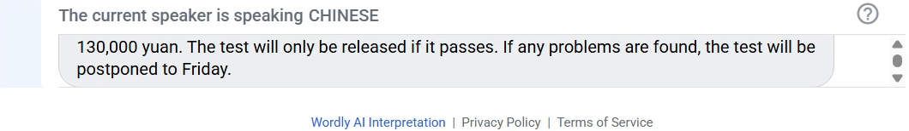
B02 · Impaired network recording/No throttling baseline 2 · wordly-v02 / 61.000s
Still No throttling at this time. The initial test results budget and other intermediate drafts were later revised; the final 5 items were retained.
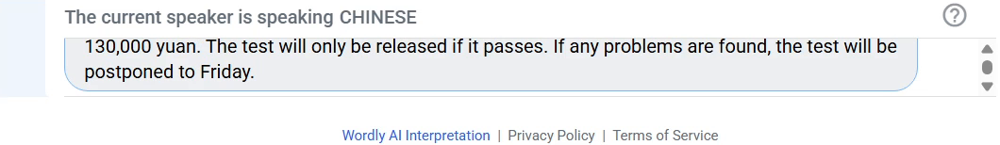
W01a · DevTools 100ms/first entry · wordly-v02 / 96.000s
The original sound is 81.4 seconds, and the new please appears at 83.7 seconds; the final new subtitles can be verified, but no attributable new English translated speech is recorded.
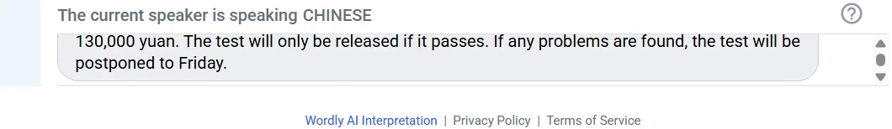
W01b · DevTools 100ms/continue replay · wordly-v02 / 118.000s
99.5 seconds are entered again, and 115 seconds complete new subtitles appear; duplication and queue effects exist, and are not treated as independent cold starts or stable averages.
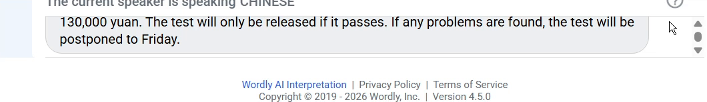
W04 · DevTools 10%/last input · wordly-v02 / 149.000s
After 131.9 seconds are entered, the recording ends in 149.6 seconds; new corresponding subtitles or English broadcasts have not been confirmed. The old subtitles still below cannot be considered a success in this round, nor can it be concluded that they are permanently lost.
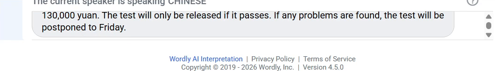
iFLYTEK Simultaneous Interpretation
Translation fact coverage
Unify S01 Chinese → English. The first, second, and 100ms and 10% configuration rounds of the sending end, the final new subtitles and recorded translated speech each retain 5 key facts.
The sender interrupts this round and does not observe the complete new S01 before the next replay; old subtitles are not counted as successful.
The listening side 100ms/Offline round recording F1 only retains the time or result fragment, complete facts 4/5, and some 1 items; the last recording did not check the release conditions. The last client subtitles are complete, and it can be seen that the listening page has not been updated. Multiple listening windows limit the translated speech of the second half. 5/5 only refers to the factual coverage of this corpus, and there are additional fragments such as 4, 3, Yes, etc. The source has not been confirmed.
Sound Clone
This time, we skipped the original evaluation scope and did not carry out sound cloning acceptance; we do not judge whether the product supports this function based on this.
Real-time performance
Videotaped observations, uncalibrated official scores. Press "Client English First Display/Enter Translation First Sound", measured from the acoustic starting point of the original sound, in seconds:
The first time 3.0/9.6; the second time 3.3/9.4; the sending end 100ms 3.4/9.8; the sending end 10% 3.3/9.8.
Listening page 100ms 3.0/9.2; Offline related input 3.5/11.5; WebRTC packet loss configuration 3.5/10.9. The second half of the audio is not isolated to the controlled window and cannot be used as the strict first response of the page.
The start page is ready in 2~4 seconds, the homepage is 6~8 seconds, the session timer is 22~24 seconds, the listening page is ready in 30~32 seconds; the original sound starts in 35.2 seconds. The first last sound is input 27.6 seconds, and the end of the sentence is trailed by 14.2 seconds. Each condition is only used once, the OBS channel is not calibrated, and the average value or P95 is not reported.
Translated speech quality
Original video 48kHz two-channel translated speech decoding check: 7 segment S01 output segment peak value is about 0.782~0.811 (full frame 1), full frame digital clipping averages 0%. Normally, the longest period of the first two rounds of segmented mute is about 4.5/6.3 seconds. You cannot judge network lag based on pauses alone.
The 5 items are retained in the transcription of 100ms/10% recordings for the first time, second time and the sending end; the first sentence of the two rounds on the listening side is incomplete, and the release conditions are not detected in the last recording.
The "Mix" track is actually mainly in English, and the other two tracks are mainly in Chinese; track selection is based on content. No digital clipping does not mean no subtle distortion. Naturalness and rhythm were not scored by blind listening; the sound sources of the multi-windows in the second half were not independently isolated.
Impaired network performance
Sending end: iFLYTEK simultaneous interpretation.exe up/downlink 100ms configuration, complete this round; interrupted for about 129~139 seconds, there is no complete new S01 before the next 155.9 seconds replay. The 10% probability of packet loss takes about 155 seconds to apply, 175~176 seconds to cancel, the translated speech takes 181.1 seconds to complete, and the tail span is canceled. Actual business damage has not been verified.
Listening end: DevTools 100ms cannot be equivalent to 100ms in both directions; there are still new subtitles/recorded translated speechs during the "offline" period of about 249~261 seconds, and the real-time link is not confirmed to be disconnected. After about 273 seconds, the WebRTC packet loss configuration occurs, the new subtitles on the client are complete, and the listening page still stays at the old segment until the end of the recording. The recording has new English but multi-window ownership is limited, so it cannot be judged as successful under controlled page loss based on this.
Once for each file, the configuration value is not the measured service packet loss rate; there is no strict recovery time.
Test status and evidence gaps
Analysis of existing video footage completed.
The scope of the impaired network: there is still new output when the listening end is offline, and the real-time connection disconnection has not been confirmed; the actual service packet loss rate of the sending end has not been measured.
Listening end first sound/translated speech: Multi-window sounds are not isolated, and there is a lack of independent recordings that can be attributed to controlled windows.
Time-consuming recovery after disconnection: no complete new output of this round was seen before replay, and subsequent recovery observations without replay interference were lacking.
Stable latency/overall accuracy: short material, a small number of recordings, and the audio and video channels are not calibrated.
Naturalness/Rhythm: Missing human blind listening scores.
Scenarios and evidence
| scene | Client subtitles facts | Listen to page subtitles facts | Video translation facts | Original video PTS | Review entry |
|---|---|---|---|---|---|
| N01 first input | correct / correct / correct / correct / correct | correct / correct / correct / correct / correct | correct / correct / correct / correct / correct | iflytek-v01 · 54.000s | screenshot · video |
| N02 Enter normally again | correct / correct / correct / correct / correct | correct / correct / correct / correct / correct | correct / correct / correct / correct / correct | iflytek-v01 · 84.000s | screenshot · video |
| S100 client upstream and downstream 100ms configuration | correct / correct / correct / correct / correct | correct / correct / correct / correct / correct | correct / correct / correct / correct / correct | iflytek-v01 · 120.000s | screenshot · video |
| Soff client interrupt related input | Not observed in this round / Not observed in this round / Not observed in this round / Not observed in this round / Not observed in this round | Not observed in this round / Not observed in this round / Not observed in this round / Not observed in this round / Not observed in this round | Not observed in this round / Not observed in this round / Not observed in this round / Not observed in this round / Not observed in this round | iflytek-v01 · 142.000s | screenshot · video |
| Sdrop client upstream and downstream packet loss configuration of 10% | correct / correct / correct / correct / correct | correct / correct / correct / correct / correct | correct / correct / correct / correct / correct | iflytek-v01 · 182.000s | screenshot · video |
| R100 listening page 100ms configuration | correct / correct / correct / correct / correct | correct / correct / correct / correct / correct | part / correct / correct / correct / correct | iflytek-v01 · 240.000s | screenshot · video |
| Roff Listening page Offline related input | correct / correct / correct / correct / correct | correct / correct / correct / correct / correct | part / correct / correct / correct / correct | iflytek-v01 · 266.000s | screenshot · video |
| Rdrop listening page WebRTC packet loss 10% configuration | correct / correct / correct / correct / correct | Not confirmed / Not confirmed / Not confirmed / Not confirmed / Not confirmed | correct / correct / correct / not observed this round / correct | iflytek-v01 · 308.000s | screenshot · video |


The sequence of facts is F1—F5. The listening page subtitles and video translations are judged separately. The recordings of R100, Roff, and Rdrop cannot be uniquely assigned to the controlled window.
N01 · First time entry · iflytek-v01 / 54.000s
First input; first draft of subtitles. Next Tuesday, please. Gradually rewrite, and finally complete. The original sound has been transliterated while still being input. Some of the Chinese input in the first two rounds overlapped in time with the English broadcast, but the actual English track selected did not have Chinese mixed in.
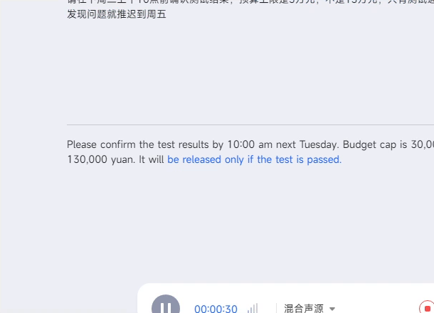
N02 · Enter normally again · iflytek-v01 / 84.000s
Play the same S01 again in the same session. The previous round of translated speech ended at 62.8 seconds, and the current round of translated speech has been entered at 57.1 seconds; the current round of translated speech started at 66.5 seconds, and can be segmented according to order and content. Not an independent hot start experiment.
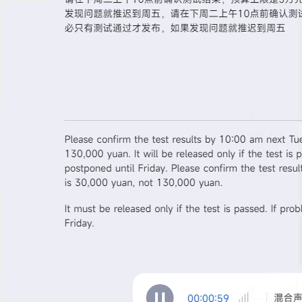
S100 · Client upstream and downstream 100ms configuration · iflytek-v01 / 120.000s
The control object iFLYTEK Simultaneous Interpretation.exe, the screen confirmation is appended with 100ms for the upstream and downstream lines, which is valid for about 94~123 seconds. Input and all translated speechs are within this configured state; actual business impairment has not been independently verified.
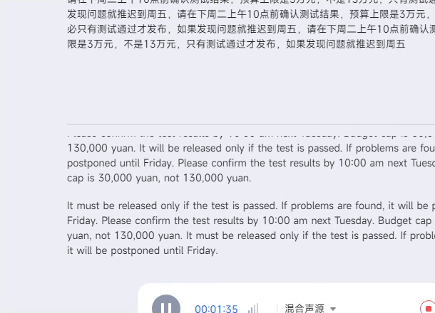
Soff · Client interrupt related input · iflytek-v01 / 142.000s
Starting from the input of 125.9 seconds, the connection is interrupted for about 129 ~ 139 seconds; the complete new S01 is not seen before returning to 155.9 seconds before re-entering. Only four extra words were recorded near 128.1 seconds, which cannot be considered as a valid first sentence. The original three complete old subtitles are not considered a success in this round.
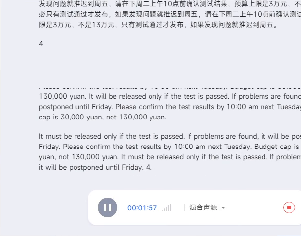
Sdrop · 10% packet loss configuration for client upstream and downstream · iflytek-v01 / 182.000s
Starting from about 155 seconds, each uplink and downlink configuration has a 10% probability of packet loss; it takes about 175~176 seconds to manually cancel it, and the translated speech ends in 181.1 seconds. The input is basically in the configuration period, and the last segment of the broadcast is cancelled; it cannot be claimed that the entire segment is completed under 10%.
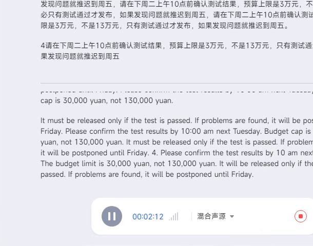
R100 · Listening page 100ms configuration · iflytek-v01 / 240.000s
The listening page display delay of the new Chrome configuration is 100ms; the final subtitles and visible web pages on the client are complete. The first sentence of the recording is only 10 a.m. next Tuesday., but it lacks the confirmation test result and F1 part. Previously another listening window still existed and the audio was not isolated per browser window.
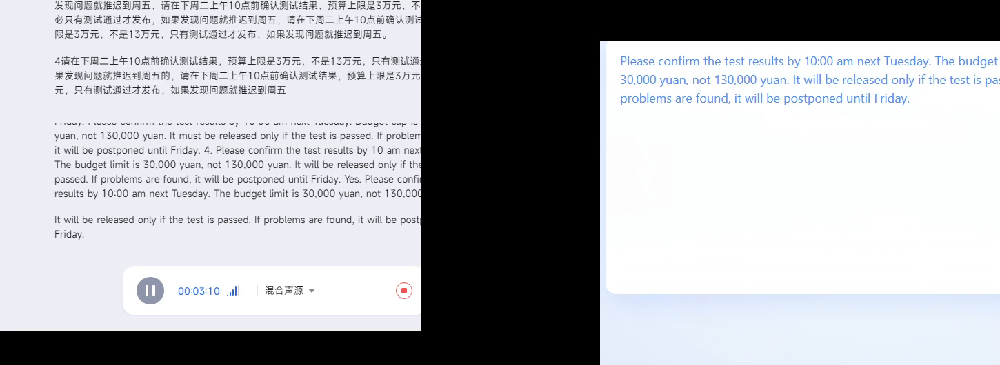
Roff · Listening page Offline related input · iflytek-v01 / 266.000s
The listening page was offline for approximately 249~261 seconds; subtitles were still updated and translated speechs were recorded during this period, which did not prove that the real-time service connection was truly disconnected. The first sentence of the recording is only Results before 10 a.m. next Tuesday…, and the actions are incomplete; the additional three are saved separately. The time taken to recover from strict disconnection cannot be calculated.
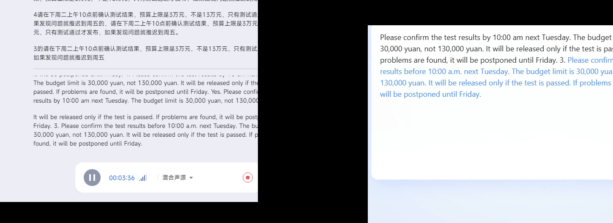
Rdrop · Listening page WebRTC packet loss 10% configuration · iflytek-v01 / 308.000s
It can be seen that the listening page selects WebRTC packet loss 10% after about 273 seconds; the new round of subtitles on the client is complete, and it can be seen that the listening page still retains the previous round of text after 308.6 seconds. There is new English in the recording, but the F4 release conditions were not detected in both transcriptions; multiple listening windows make the translated speech source and controlled page ownership non-unique.
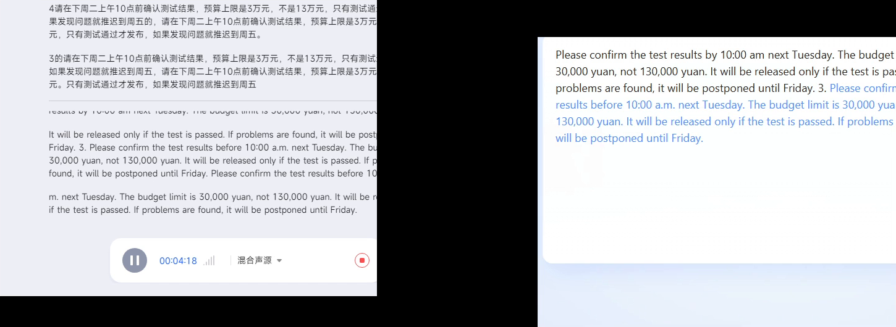
Reproducibility and data
The final visible worksheet is included as a CSV value snapshot indata/tables/, does not contain legacy workbooks, hidden tables, comments, personal author information, or native hyperlinks. The comparison conclusion is indata/comparison.csv, the scene and time data are indata/results.json、data/timing.csv. CSV does not retain original Excel formulas and styles; the local original is unchanged.
Comprehensive comparison with the original table is provided separately.benchmark-results.xlsx: Keep cells, styles, drawings, and open source comments, and only clear the author/modifier identity and local working directory attributes. The prices, policies and untested function descriptions in the table are retained as records at the time and do not serve as the latest quotations or new measured conclusions. Cleaning and integrity records seedata/workbook-verification.json。
scripts/Includes offline media inspection and recalculation entrance, actual used historical analysis source code, current impaired network tool source code and related test source code. The historical process includes manual judgment, and all conclusions cannot be automatically restored by re-running OCR/ASR; the original model and unpublished desktop originals are not distributed with the repository. Reproduction range and required input seeReproduction instructions。
Privacy, evidence selection and integrity
Only valid videos and final table values referenced by the final evaluation record are included. Wasted manuscripts, backups before modification, unused text, original OCR/ASR logs, screenshot candidates, intermediate audio, cache, models, installers, running status and session configurations are not included in the public package. The valid 10% packet loss supplement is retained, which is referenced by the final Transync result and is not considered a scrap.
The user has allowed public testing of reading and timbre clone sounds. The public video only retains the test-related audio time interval, and is muted at other times; the identifiable account, conference code/QR code, browser personal content, and local path area are completely blocked according to fixed/time-sharing rules, and no reversible blur is used. The screenshot is derived from the same frame after occlusion, and the original image with personal information is not copied. For detailed rules, check values, cutting end points and restrictions, seePrivacy and Evidence Statement、data/media-manifest.json。
Publish the video as a re-encoded view copy. All quantitative measurements are carried over from the local original; equivalent accuracy is not re-claimed as a compressed copy, AAC-compressed audio, or masked image. The verification value of the original is only used to compare the locally saved files, and unredacted originals are not available for download.
Test input audio
S01 standard test script (spoken in Chinese):
Transync voice-cloning reference: